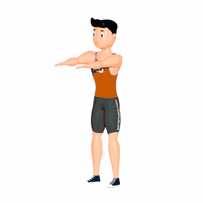

Squats

O exercício trabalha diversas partes do corpo, auxilia na definição e fortalecimento dos músculos e queimar gorduras. Estimula a coordenação motora, força e explosão. Nível avançado.
Ficha Técnica
Tipo: Funcional
Grupo Muscular: Perna
Aparelho: Nenhum
Músculos: Nenhum
Como realizar
- Na posição em pé;
- Pernas afastadas e com a ponta dos pés ligeiramente apontados para fora;
- Coluna reta e abdome contraído;
- Realize o agachamento até os quadris ficaram abaixo da linha dos joelhos e simultaneamente eleve os braços para frente;
- Na posição final do agachamento os joelhos não poderão ultrapassar a linha da ponta dos pés;
- Retorne à posição inicial alinhando todo o corpo. 7. Repita os movimentos, conforme o número de repetições orientado pelo professor.
 RC STORE
RC STORE